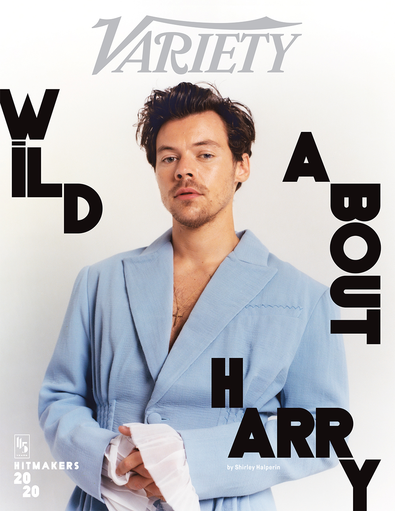
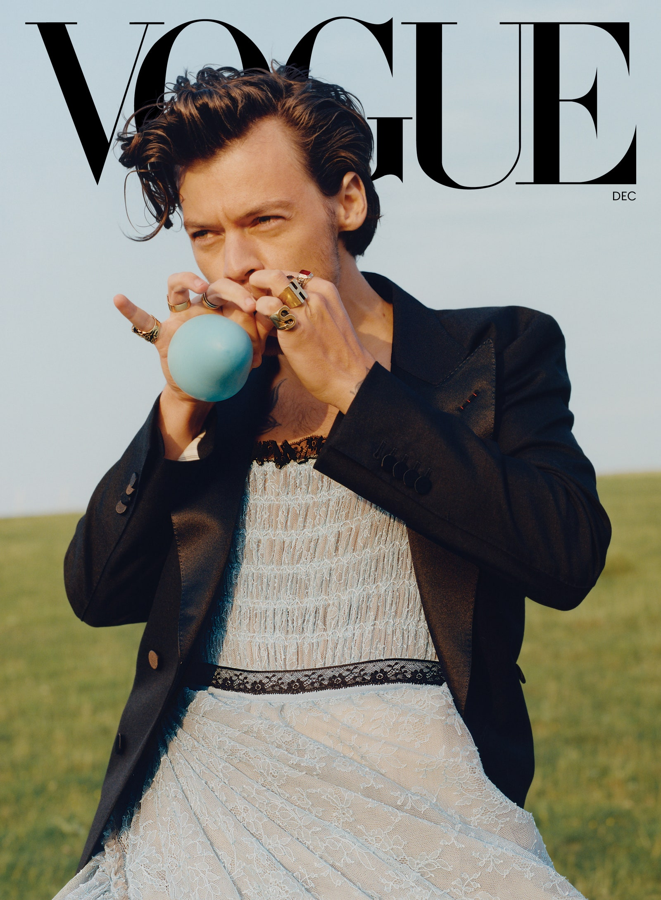
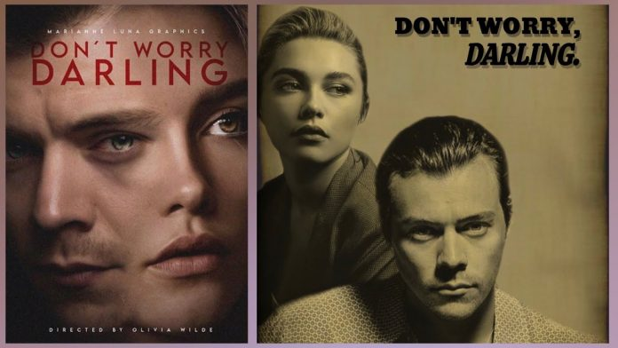
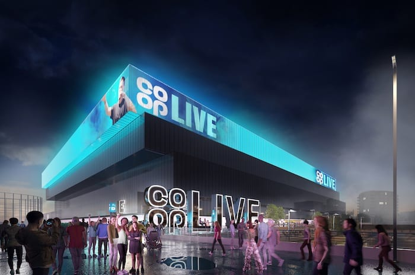

actueel
variety Hitmaker of the Year
 Styles is dit jaar benoemd tot hitmaker van het jaar door variety. Hiervoor gaf Harry ook een interview en zijn er foto's van een fotoshoot uitgebracht. Het artikel is hieronder te lezen.
https://variety.com/2020/music/news/harry-styles-fine-line-hitmaker-of-the-year-1234842744/Grammy awards
 De nominaties voor de grammy awards zijn binnnen. Harry is genomineerd voor 3 grammys: beste video clip (Adore You), best pop vocal album (Fine Line), beste pop-uitvoering solo (Watermelon Sugar). De award show is op 31 Januari.
De nominaties voor de grammy awards zijn binnnen. Harry is genomineerd voor 3 grammys: beste video clip (Adore You), best pop vocal album (Fine Line), beste pop-uitvoering solo (Watermelon Sugar). De award show is op 31 Januari.
Vogue cover
 Een grote milestone voor de pop star. Harry is de eerste man die in de 128 jaar dat het blad bestaat in zijn eentje op de cover van Vogue staat. En in een jurk nog wel. Dit maakte heel wat commotie los bij veel mensen. Maar Styles trekt zich daar weinig van aan en vindt dat kleding geen gender moet moet hebben.
https://www.vogue.com/article/harry-styles-cover-december-2020Don't Worry Darling

Harry Styles die in een nieuwe film van Olivia Wilde mét Florence Pugh speelt: daar kan al weinig meer misgaan. De zanger gaat de rol van Jack, de perfecte man van Alice (Florence) in Don't Worry Darling vertolken en vervangt daarmee Shia LaBeouf. Styles bewijst daarmee wederom een multitalent te zijn, die niet alleen een feilloos mode- én muziekgevoel heeft, maar het ook goed doet op het witte doek.
source: Vogue
investering in een nieuwe muziek arena
 Harry zet zijn eerste stappen in de business wereld. Hij doet een grote investering in een nieuwe muziek arena in de buurt van zijn geboorteplaats. Het gebouw gaat Co-op Live heten. Dit gebouw zal veel nieuwe banen opleveren, zo'n 3500 tijdens de bouw en 1000 banen zodra er eenmaal concerten worden gegeven. De bouw is inmiddels al gestart en naar verwachting is het gebouw in september 2023 klaar.
https://cooplive.com/